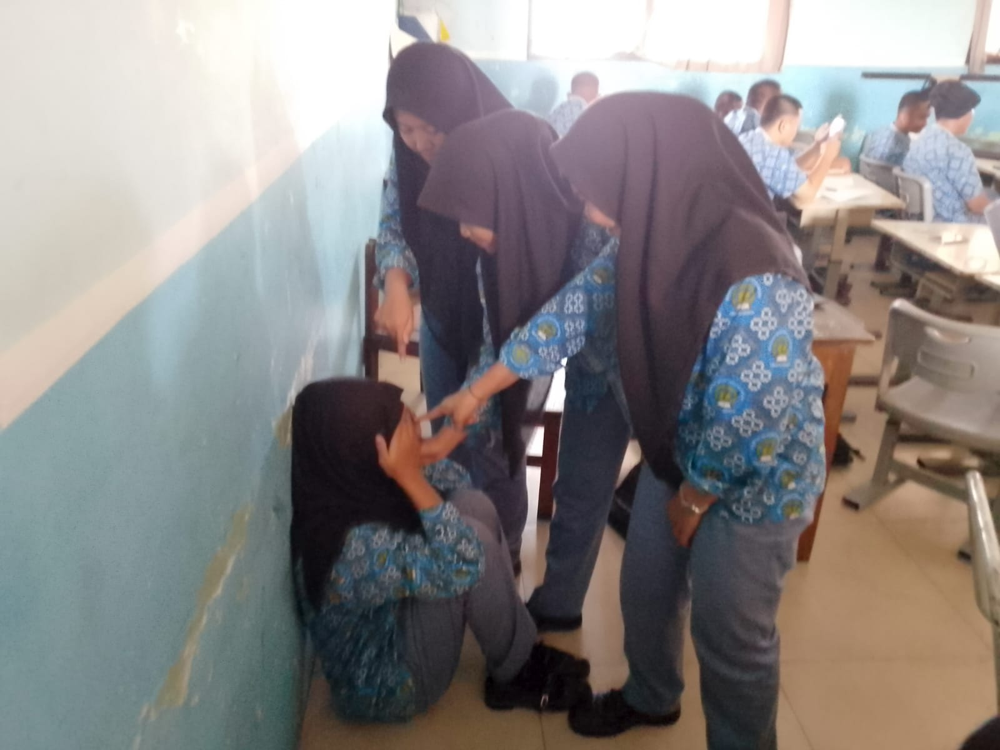

STOP BULLYING

Kenali, Cegah, dan Laporkan Perundungan
Selamat datang di platform informasi Anti-Bullying yang dikembangkan oleh Kelompok Flashdisk. Kami berkomitmen menciptakan lingkungan sekolah ramah, inklusif, dan aman baik secara fisik maupun di ranah digital (cyberbullying). Mari bersama-sama hentikan rantai kekerasan mental di sekeliling kita.
Judul
Materi SistemProfil Tim Pengembang
SMK Negeri 36 Jakarta
Siswa Kompetensi Keahlian Teknik Komputer & Jaringan (TKJ)
JA
Jescika Amalia
Tim Flashdisk
RM
Rahmadini
Tim Flashdisk
NA
Nabila Asyila Putri
Tim Flashdisk
NS
Nadia Selsabilla
Tim Flashdisk
Layanan Bantuan Pengaduan
Laporkan kejadian perundungan di sekitar sekolah ke admin layanan secara instan melalui sistem integrasi WhatsApp.